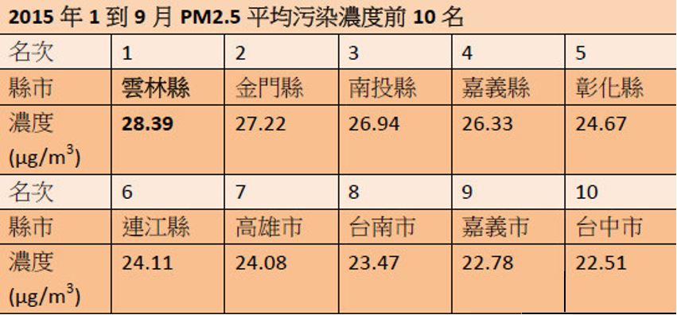
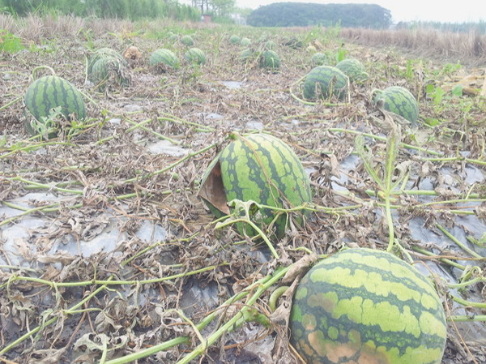

事件名稱：麥寮六輕空氣污染
事件地點：雲林縣麥寮鄉
事發狀況
相較起其他的台灣城市，空汙在雲林是一個截然不同的故事。境內的台塑六輕廠，帶動6千多億的投資，也帶來了年達14多萬噸的PM2.5排放，以及其他多種的污染物。今年1到9月，雲林空氣更是全台最髒。台大公衛學院副院長詹長權進一步以研究結果指出，「愈接近六輕的地方，癌症愈多！」
2009年，詹長權發表受雲林縣環保局委託調查的〈空氣污染對沿海地區環境及居民健康影響風險評估〉報告，就揭露了六輕對雲林人致命的污染真相，台塑六輕所在地麥寮及周遭台西鄉、東勢鄉和崙背鄉等地，在六輕1999年開始營運後，全癌症發生率就顯著增加，但是從報告發表迄今近6年來，官方毫無作為，「有什麼action？沒有！」
空污嚴重，就連農作物也受害。東勢鄉子弟吳松霖在3年多前返鄉，原本打算推廣在地農業，卻發現土壤與水質在六輕工業排放物長期污染下，早已變得不堪使用，而且只要一下雨，特別是不會迅速沖刷掉的小雨，和空氣中高濃度的SOx(硫氧化物)和NOx(氮氧化物)結合形成酸雨，讓高麗菜和蘿蔔長滿一個個黑點，西瓜田也整片爛掉，他一怒之下，改辦「自從六輕來了」電子報，帶居民認識環境污染議題。
調查結果
環保署副署長詹順貴表示，一月十八日將派專案小組到六輕稽查，一週內會有結果，一旦有應罰而未開罰情況，一定會辦到底，甚至不排除業者有惡意規避情事時，移送檢調處理。
詹順貴也指出，長期來看地方環保局的確人力不足，會設法爭取補助，目前法令雖然容許校正，且規定有效數值得達八十五％，但若是假造理由校正，就算只有一筆也無法接受，將來會從系統改進，稽核每一筆校正，只要違規，就會自動跳出警示，環保局就要主動稽查。